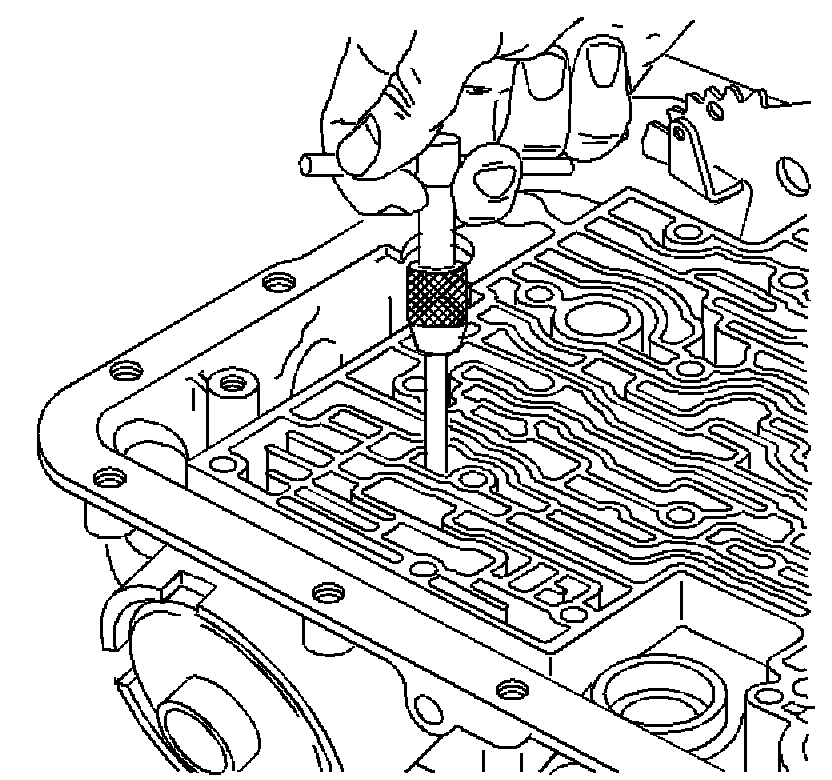
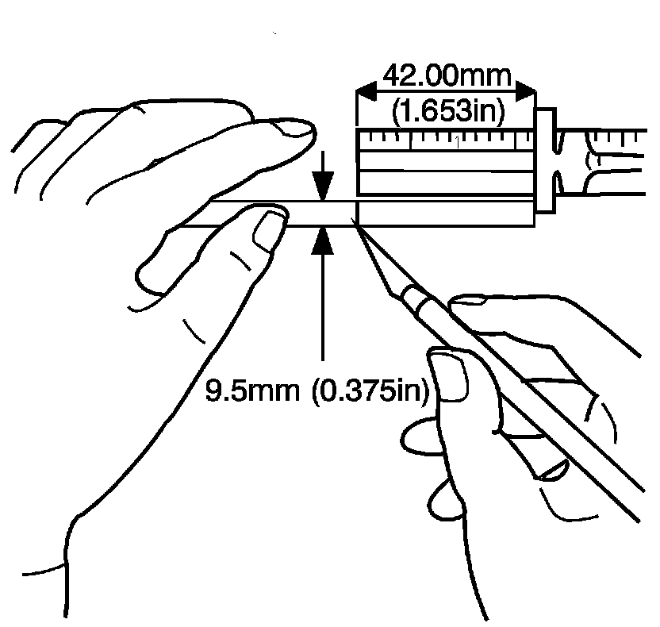
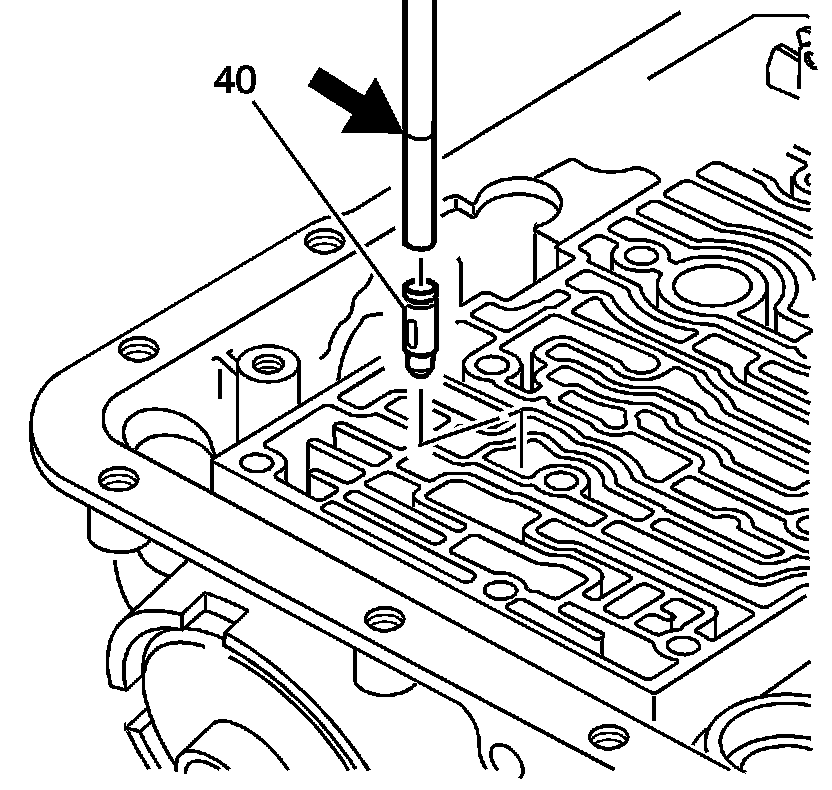
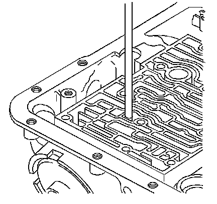
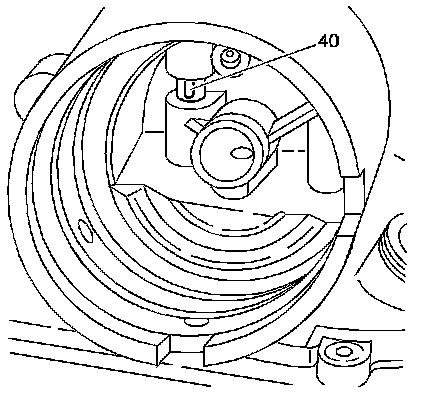

Third Accumulator Retainer and Ball Replacement
Third Accumulator Retainer and Ball Replacement

1. Remove the third accumulator retainer and ball assembly, using a 6.3 mm (0.25 in) #4 screw extractor.

2. Scribe a mark at 42 mm (1.653 in) on a 9.5 mm (0.375 in) diameter metal rod. The scribe mark is used to gage the proper depth of the third accumulator retainer and ball assembly.

3. Perform the following functions:
1. Line up the oil feed slots in the third accumulator retainer and ball assembly (40) with the servo bore.
2. Using the 9.5 mm (0.375 in) diameter metal rod, install the third accumulator retainer and ball assembly.

4. Ensure that the third accumulator retainer and ball assembly and the scribe mark on the rod are flush with the case surface.

5. Check the third accumulator retainer and ball assembly (40) for alignment. The slot in the retainer must be completely open in the servo bore.